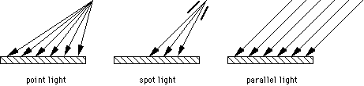

- radiates light energy equally in all directions (omnidirectional)
- defined by position in space and light intensity
- incident rays strike surface with varying angles
Spot Light Source
- creates a beam or cone of directed light
- defined by position, light intensity, direction, and spot angle
- intensity may vary across beam
Directional or Parallel Light
- source is assumed to be far away
- all rays are parallel
- defined by direction and light intensity
- incident rays strike surface with constant angles

Ambient Light
- replaces the effect of inter-object reflections
- avoids otherwise 'black' surfaces that receive no direct illumination
- can be seen as nondirectional background light present throughout the scene
- defined by intensity only
- typically 20 to 25% percent of total illumination
Emissive Light
- not an actual light source, but a property of an object (material property)
- makes an objects appear to be giving off light
- object has an intrinsic intensity (self-luminous object)
- defined by light intensity only
- has no effect on other objects (not treated as a light source)
- used to model a light source like a lamp (note: a light source by itself is invisible)
Other Effects (VRML 2.0)
- in VRML 2.0, ambient light is defined as part of a light source (although it is sourceless)
- attenuation: light intensity decreases with distance from light source
- radius: used to limit the effect of a point or spot light, objects outside radius are not lit
Note: In VRML 2.0, 'light intensity', as used above, is defined by color (R,G,B) and intensity, a factor applied to the color components (except for emissive light).


{kind=link}
{kind=link}